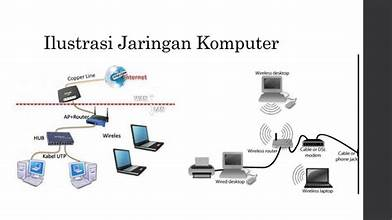

Peran Jaringan
Dalam kehidupan modern saat ini, jaringan memainkan peran krusial dalam mendukung berbagai aktivitas, baik di rumah, sekolah, bisnis, maupun pemerintahan. Jaringan memungkinkan perangkat untuk terhubung dan bertukar informasi secara real-time, mendukung layanan digital seperti internet, cloud computing, e-commerce, media sosial, serta komunikasi jarak jauh. Jaringan juga berfungsi sebagai infrastruktur utama untuk layanan internet of things (IoT), yang semakin banyak digunakan dalam berbagai bidang seperti kesehatan, transportasi, rumah pintar, dan industri.
Jenis-Jenis Jaringan dalam Teknologi
- Jaringan Kabel:
- Ethernet (LAN): Jaringan kabel yang digunakan untuk menghubungkan komputer di area lokal menggunakan kabel tembaga atau serat optik.
- Fiber Optic: Menggunakan serat optik untuk mentransfer data dengan kecepatan tinggi, terutama dalam backbone jaringan atau antara data center.
- Jaringan Nirkabel:
- Wi-Fi (WLAN): Jaringan nirkabel lokal yang digunakan untuk menghubungkan perangkat tanpa kabel melalui sinyal radio.
- Bluetooth: Digunakan untuk komunikasi jarak pendek antar perangkat, seperti headphone atau perangkat pintar lainnya.
- 4G/5G (Seluler): Jaringan nirkabel yang digunakan untuk komunikasi data dalam jaringan luas, seperti internet seluler.

Langkah-Langkah dalam Membangun Jaringan Kabel dan Nirkabel
1. Membangun Jaringan Kabel:
- Perencanaan: Identifikasi kebutuhan jaringan (misal, jumlah pengguna, perangkat, kecepatan, topologi jaringan).
- Instalasi Kabel: Pasang kabel sesuai topologi yang direncanakan (misal, topologi bintang untuk kantor).
- Konfigurasi: Konfigurasi switch dan router untuk memastikan distribusi jaringan yang optimal.
- Pemeliharaan: Lakukan pengawasan jaringan secara rutin untuk memastikan tidak ada kabel yang rusak.
2. Membangun Jaringan Nirkabel:
- Perencanaan: Analisis cakupan sinyal Wi-Fi dan kebutuhan bandwidth.
- Instalasi Perangkat: Pasang access point di lokasi yang strategis.
- Konfigurasi: Konfigurasi AP dengan SSID dan pengaturan keamanan (misal, WPA2 atau WPA3).
- Uji Jaringan: Uji kekuatan sinyal dan throughput di berbagai lokasi untuk memastikan cakupan yang baik.
- Pemeliharaan: Lakukan monitoring secara teratur untuk menghindari kemacetan jaringan atau interferensi sinyal.
Cara Menganalisis Trouble Shooting pada Jaringan
Untuk mengatasi masalah jaringan, beberapa langkah yang umum dilakukan antara lain:
- Periksa Koneksi Fisik: Pastikan kabel atau perangkat nirkabel terhubung dengan benar.
- Reset Perangkat: Mulai ulang router, switch, atau access point untuk memperbaiki masalah sementara.
- Diagnosa Alamat IP: Gunakan perintah seperti `ipconfig` atau `ping` untuk memastikan perangkat memiliki alamat IP yang benar dan dapat berkomunikasi.
- Monitor Trafik Jaringan: Gunakan alat seperti Wireshark untuk memantau paket data yang lewat di jaringan.